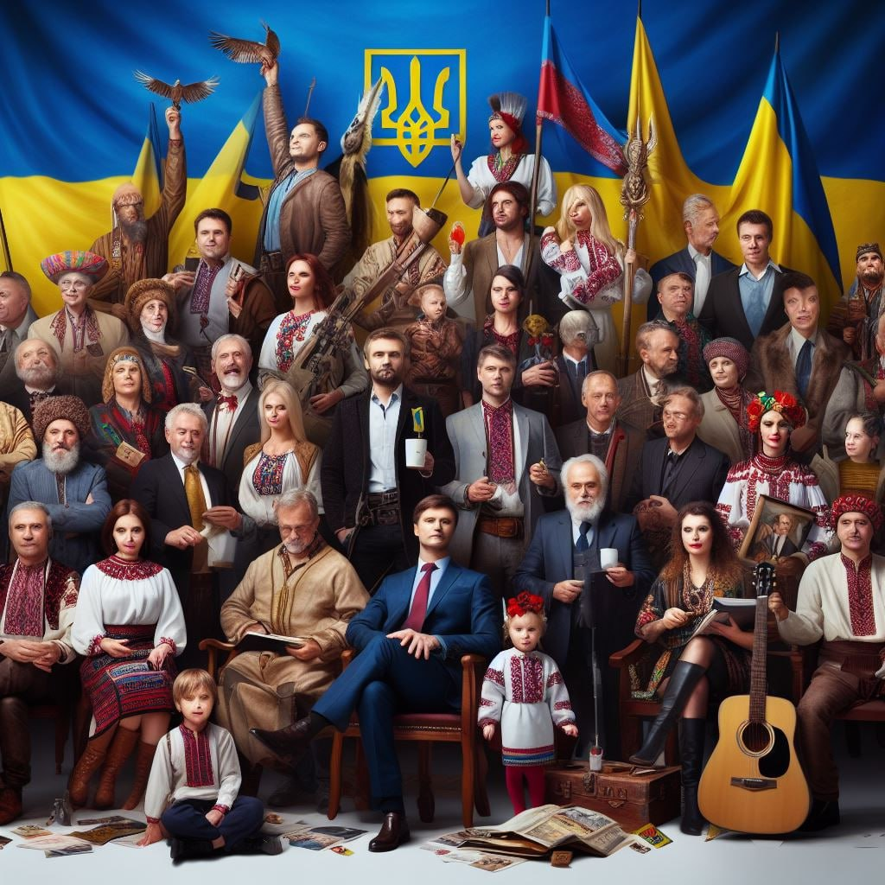

Активізм та участь: Як зміцнити громадянське суспільство?
Громадянське суспільство - це сфера суспільного життя, яка
складається з об’єднань громадян, що добровільно співпрацюють заради
спільних інтересів та цілей. Громадянське суспільство включає
різноманітні форми громадської активності та участі, такі як
благодійність, волонтерство, неприбутковий сектор, громадські рухи,
НГО тощо1. Для зміцнення громадянського суспільства необхідно
створити сприятливе правове та інституційне середовище, яке б
захищало права та свободи громадян, сприяло їхньому включенню та
демократичності. Також важливо розвивати культуру довіри, діалогу та
співпраці між різними акторами громадянського суспільства, а також
між ними та державою. Нарешті, потребуються освітні та інформаційні
програми, які б популяризували цінності громадянського суспільства
та показували приклади успішного активного громадянства
Взаємодопомога та солідарність: Історії успіху.
Взаємодопомога та солідарність - це соціальні цінності, якими
керуються люди, коли вони надають практичної або моральної підтримки
один одному у складних ситуаціях. Взаємодопомога та солідарність
виявляються у формах обмеження послугами, благодатних проектами,
соцальних іницативами тощо4. Історично Україна багата прикладами
взаємодопомоги та солідарності, особливо у часи криз та війн.
Наприклад, під час Голодомору 1932-1933 років багато селян ділилися
хлібом та продуктами з голодними мешканцями міст, незважаючи на ризик
репресій з боку радянської влади. Під час Другої світової війни багато
українців приховували та допомагали євреям, яких переслідували
нацисти. За це близько 2,5 тисяч українців отримали звання Праведників
народів5. У сучасних умовах взаємодопомога та солідарність також
проявляються у різних сферах життя. Наприклад, під час Революції
гідності 2013-2014 років багато людей надавали матеріальну, медичну,
правову та іншу допомогу протестувальникам на Майдані. Під час війни
на Сході України багато волонтерських організацій та індивідуальних
донорів забезпечували потреби воїнів, переселенців, поранених та інших
постраждалих. Під час пандемії COVID-19 багато людей долучилися до
інформаційних кампаній, благодатних акцій, соцальних проектами,
спрямованих на попередження поширення вірусу та покращення життя
хворих та медичного персоналу.
Повернутись